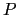
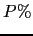
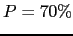
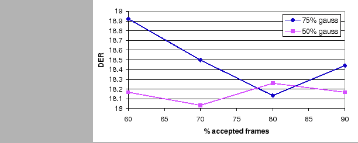

Next: Multiple Feature Streams Automatic Up: Individual Algorithms Performance Previous: Friends-and-Enemies Clusters Initialization Contents
The frame and segment purification algorithms deal with the problem of cluster impurity at two different levels. The segment level purification locates the segments within a cluster that are most probable to belong to a different speaker and places them in a different cluster. The frame level purification locates those frames that impede the proper discrimination between clusters and eliminates them when conducting the cluster pairs comparison.
First, experiments were performed on the frame purification algorithm. For all experiments either metric 1 or 2 were used (see section 4.3.1). Two main parameters were selected that determine the behavior of the algorithm given the data. On one hand the percentage % of data with the highest metric values to be eliminated from the models comparison. On the other hand, the percentage of Gaussian mixtures with smallest average variance that are used to compute metric 2. In fact, metric 1 can be considered equivalent to metric 2 when 100% of Gaussians are used.
Given the development data, figure 6.12 shows the average DER for several  of used frames and using 50% and 75% of the available Gaussians. The optimum value is found for 50% Gaussians and using  of the frames. While using a 75% of Gaussians shows a clear minimum point with much higher values around it, with the optimum 50% values oscillate around the minimum, showing a more robust selection of the optimum point.
|  |
In the segment purification algorithm no parameters were tuned. Table 6.15 compares the selected systems to the baseline both in the development set and the evaluation set. While segment purification obtains an improvement of 2.5% relative on the development set, it obtains worse results than the baseline in the evaluation set. The frame purification algorithm obtains an improvement of 3.6% and 2.8% relative improvement in development and evaluation sets respectively.
|
user 2008-12-08